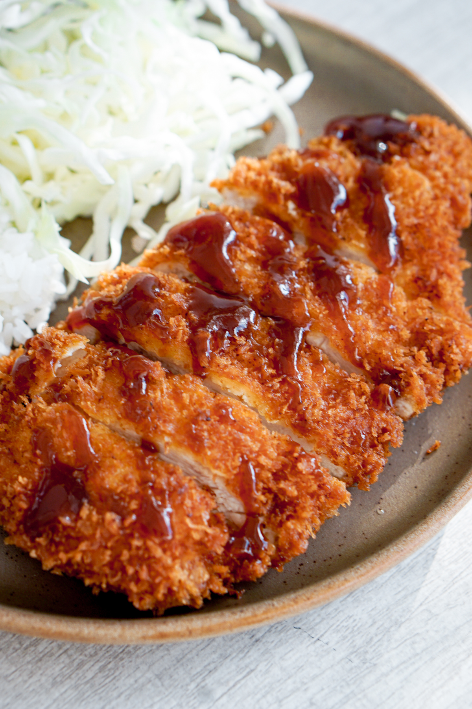

Chicken Katsu

Description
Chicken katsu is Japanese-style fried chicken. This is my family recipe and can also be used to make tonkatsu by using pork cutlets instead of chicken. Serve with white rice and tonkatsu sauce.
Ingredients
- Chicken: You'll need four skinless, boneless chicken breast halves.
- Seasonings: This chicken katsu recipe is simply seasoned with salt and pepper.
- Flour: All-purpose flour helps seal in the moisture, adds flavor, and promotes browning.
- Egg: An egg adds moisture and gives the Panko something to stick to.
- Panko: Panko bread crumbs are responsible for katsu's signature crunch.
- Oil: Opt for a neutral oil with a high smoke point, such as canola or vegetable oil.
Steps
- Step 1: Season chicken breasts on both sides with salt and pepper. Place flour, beaten egg, and panko crumbs into separate shallow dishes. Coat chicken breasts in flour, shaking off any excess; dip into egg, and then press into panko crumbs until well coated on both sides.
- Step 2: Heat oil in a large skillet over medium-high heat. Place chicken in the hot oil, and fry until golden brown, 3 or 4 minutes per side. Transfer to a paper towel-lined plate to drain.